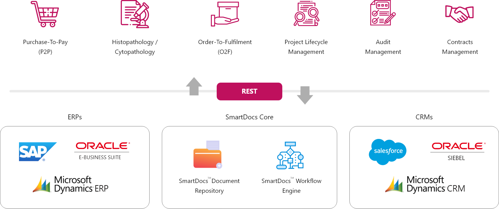

Digital Transformation
Digital transformation is the cultural, organizational and operational change of an organization, through a smart integration of
digital technologies, processes and competencies across all levels and functions in a staged way. Digital transformation leverages technologies
to create value for various stakeholders (clients in the broadest possible sense), innovate and acquire the capabilities to rapidly adapt to changing circumstances.
So digital transformation is the profound transformation of business and organizational activities, processes, competencies and models to fully leverage the changes.
Technological evolutions and technologies, ranging from the Cloud, Big Data, advanced analytics, artificial intelligence, machine learning and mobile/mobility (a key game changer) to IoT and more recent emerging technological realities are:
So digital transformation is the profound transformation of business and organizational activities, processes, competencies and models to fully leverage the changes.
Technological evolutions and technologies, ranging from the Cloud, Big Data, advanced analytics, artificial intelligence, machine learning and mobile/mobility (a key game changer) to IoT and more recent emerging technological realities are:
- Enablers of digital transformation
- Causes of digital transformation needs (among others as they impact behavior of consumers or reshape entire industries, as in the digital transformation of manufacturing)
- Accelerators of innovation and transformation. Yet, technology is only part of the equation as digital transformation is by definition holistic
FirstQA Systems leverages enterprise cloud platforms of ServiceNow, Salesforce and SmartDocs as building blocks for driving and implementing
transformation initiatives. Digital transformed companies at its matured stage enable them to be more agile, people-oriented, innovative, client-
centric, streamlined, efficient and able to induce/leverage opportunities to change the status quo and tap into new service-driven revenues.

FirstQA’s ServiceNow Center of Excellence (CoE) is a one-stop-shop for Digital Transformation services using ServiceNow Platform.
As a ServiceNow’s Services Partner, our CoE brings rich expertise and proven methodologies to our client portfolio.
Leveraging proven SIM methodology, ServiceNow CoE members use best practices and domain expertise to deliver solution architecture, lead implementations, customizations, development and post implementation Application Management Service to successfully transform organizations.
ServiceNow CoE delivers following services to global enterprise clients:
Leveraging proven SIM methodology, ServiceNow CoE members use best practices and domain expertise to deliver solution architecture, lead implementations, customizations, development and post implementation Application Management Service to successfully transform organizations.
ServiceNow CoE delivers following services to global enterprise clients:

Implementation Service
Agility
App development
Workflow & Integration
Workflow & Integration
Now Platform Service
Intelligence
Artificial Intelligence
Performance analytics
Performance analytics

Application Management Service
Experience
Mobile
Virtual Agents
Portals
Virtual Agents
Portals
Implementation Service – helps clients achieve greater business value from their ServiceNow investment,
leveraging industry knowledge, technology capabilities and cross-functional expertise in service management to design
solutions that go beyond the technology to deliver effective business outcomes. Our expertise spans across ServiceNow solutions
– ITSM, ITOM, ITBM, CSM, SecOps, HRSD and GRC and NOW platform development.
Application Management Service (AMS) – support changing business needs after implementation. Deliver ongoing improvement and maintenance service of ServiceNow implementation including upgrades as a fixed-price SLAs based managed service.
NOW platform – help build cloud‑native digital workflows and custom applications using the low code and pro code features of ServiceNow platform by leveraging a rich set of pre‑built services, workflows and templates.
Application Management Service (AMS) – support changing business needs after implementation. Deliver ongoing improvement and maintenance service of ServiceNow implementation including upgrades as a fixed-price SLAs based managed service.
NOW platform – help build cloud‑native digital workflows and custom applications using the low code and pro code features of ServiceNow platform by leveraging a rich set of pre‑built services, workflows and templates.

In today’s age of digital disruptions, global companies need to constantly embrace change to keep pace with the complex,
volatile and ever-evolving business landscape. Success in the digital age depends on transformative thinking and having the right
set of platforms to quickly convert these thoughts to action.
SmartDocs is our leading solution to “enable digital transformation” in your organization. It extends a plethora of features to organizations for efficient management of enterprise content as well as automate business processes and workflows.
It helps companies with content management using workflows, audit and compliance, internal and external stakeholder collaboration. It provides powerful 256-bit AES encryption, multi-language support, multi-device accessibility for users and supports SaaS, on-premises as well as hybrid installations.
SmartDocs has a powerful workflow engine for rapid development and deployment of workflow-based enterprise applications. Leverage the power of SmartDocs Application Framework and the Workflow and Content Repository layers in the backend, to build easy-to-use, secure and scalable enterprise applications using the low-code features of the platform.
Our SmartDocs implementation team brings rich expertise and proven methodologies to our client portfolio with B2B secured collaboration, process automation and workflows with low-code model.
SmartDocs is our leading solution to “enable digital transformation” in your organization. It extends a plethora of features to organizations for efficient management of enterprise content as well as automate business processes and workflows.
It helps companies with content management using workflows, audit and compliance, internal and external stakeholder collaboration. It provides powerful 256-bit AES encryption, multi-language support, multi-device accessibility for users and supports SaaS, on-premises as well as hybrid installations.
SmartDocs has a powerful workflow engine for rapid development and deployment of workflow-based enterprise applications. Leverage the power of SmartDocs Application Framework and the Workflow and Content Repository layers in the backend, to build easy-to-use, secure and scalable enterprise applications using the low-code features of the platform.
Our SmartDocs implementation team brings rich expertise and proven methodologies to our client portfolio with B2B secured collaboration, process automation and workflows with low-code model.
Key Security Features

Content Encryption

Device Encryption

Secure Achitecture

IP Whitelisting
Permissions

Detailed logs
In today’s age of digital disruptions, global companies need to constantly embrace change to keep pace with the complex, volatile and ever-evolving business landscape. Success in the digital age depends on transformative thinking and having the right set of platforms to quickly convert these thoughts to action.
SmartDocs is our leading solution to “enable digital transformation” in your organization. It extends a plethora of features to organizations for efficient management of enterprise content as well as automate business processes and workflows.
It helps companies with content management using workflows, audit and compliance, internal and external stakeholder collaboration. It provides powerful 256-bit AES encryption, multi-language support, multi-device accessibility for users and supports SaaS, on-premises as well as hybrid installations.
SmartDocs has a powerful workflow engine for rapid development and deployment of workflow-based enterprise applications. Leverage the power of SmartDocs Application Framework and the Workflow and Content Repository layers in the backend, to build easy-to-use, secure and scalable enterprise applications using the low-code features of the platform.
Our SmartDocs implementation team brings rich expertise and proven methodologies to our client portfolio with B2B secured collaboration, process automation and workflows with low-code model.
SmartDocs is our leading solution to “enable digital transformation” in your organization. It extends a plethora of features to organizations for efficient management of enterprise content as well as automate business processes and workflows.
It helps companies with content management using workflows, audit and compliance, internal and external stakeholder collaboration. It provides powerful 256-bit AES encryption, multi-language support, multi-device accessibility for users and supports SaaS, on-premises as well as hybrid installations.
SmartDocs has a powerful workflow engine for rapid development and deployment of workflow-based enterprise applications. Leverage the power of SmartDocs Application Framework and the Workflow and Content Repository layers in the backend, to build easy-to-use, secure and scalable enterprise applications using the low-code features of the platform.
Our SmartDocs implementation team brings rich expertise and proven methodologies to our client portfolio with B2B secured collaboration, process automation and workflows with low-code model.
Build Enterprise Applications on SmartDocs
Rapid Development of Custom Applications through SmartDocs™ Application Framework


FirstQA Systems delivers design, implementation, customization and Application Management Services for Salesforce solutions.
Using cloud based Sales, Service and Marketing solution as a building blocks, we deliver various digital transformation initiatives for our clients.
Connect with your clients across sales, client service, marketing, communities, apps, analytics, and more with Salesforce solutions.
Connect with your clients across sales, client service, marketing, communities, apps, analytics, and more with Salesforce solutions.
- Salesforce Sales Cloud – gives sales team the tools to close more deals faster, increase productivity, and keep their pipeline filled with solid leads — from anywhere.
- Salesforce Service Cloud - enhance client service — from call center software to self-service portals — with more responsive, intuitive, and flexible support that anticipates client needs.
- Salesforce Marketing Cloud - create exceptional cross-channel client journeys that deliver personalised experiences across email, mobile, social, advertising, the web, and more.
- Salesforce Lighting – a low-code and pro-code platform for us to automate your business processes, integrate with external applications, provide responsive layouts and more for engaging UI/UX.
FirstQA Salesforce team leverages the solutions, frameworks and accelerators of Salesforce cloud platform to deliver digital transformation solution.
The Salesforce Ecosystem
Our Salesforce expertise helps our customers in planning, designing, and implementing Salesforce based business solutions.